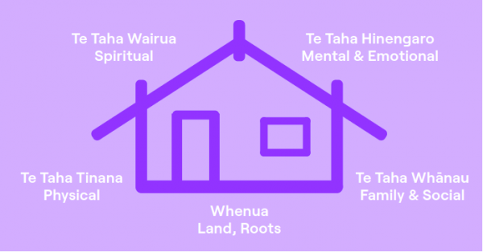

Te Whare Tapa Whā
Physical, Mental, Spiritual, and Family Well-being

Taha Tinana (Physical wellbeing)
- Dance Classes: I have a studio membership, and these classes are all about DANCE + VIBE + COMMUNITY. Definitley need to go because I am on a direct debit.
- Hot Girl Walks: On Sunday's the girlies and I pick a different mountain to hike and close our rings. We shall keep this tradition going.
Taha Hinengaro (Mental wellbeing)
- Practicing Mindfulness: Every day, I try turn my skincare routine into a mindful moment. As I apply my products, I pay attention to how they feel and smell, just taking a few minutes to really be in the moment. It is a simple way to center my energy whilst doing a monotonous task.
- Daily Debriefs: Yapping is a privilege. I have a tendency to isolate myself when I am struggling, but I am fortunate to have friends who do not let me do that. It is a two-way street, as I also make sure to support them and not let them isolate themselves during their tough times. Some of my friends are also studying so it would be great for all of us to
Taha Wairua (Spiritual wellbeing)
- Taking Care of My Wairua:
Taha Whānau (Family wellbeing)